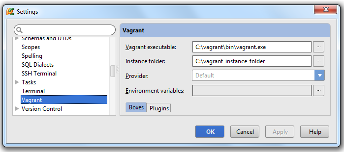
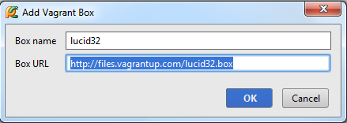
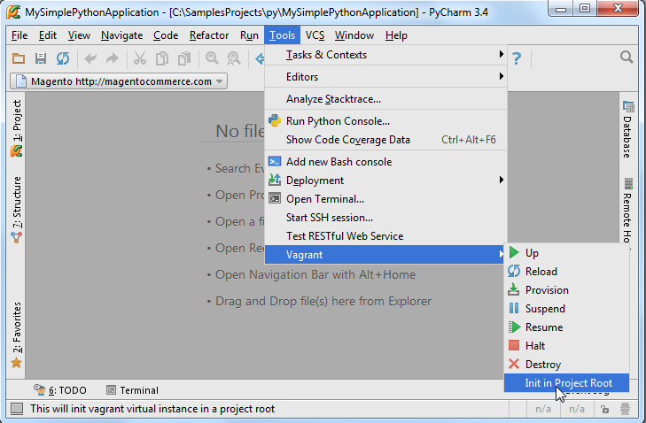
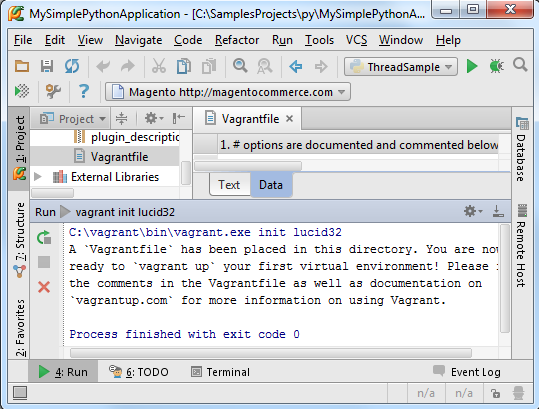
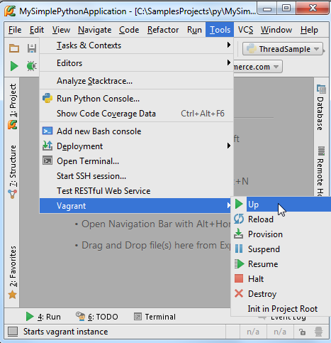
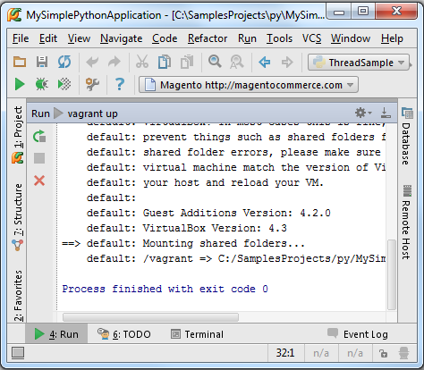

1、主题
介绍如何在Pycharm中使用Vagrant
2、准备工作
确认电脑上安装了Vagrant和Oracle VirtualBox。
3、下载安装Vagrant
下载地址： from the official website
4、下载安装Oracle VirtualBox
下载地址：download and install
5、设置环境变量
将vagrant的可执行文件和VBoxManage.exe添加到环境变量中。
6、配置Vagrant工程
在工程设置窗口，打开 Vagrant页，指定相关参数。其中必须指定Vagrant可执行文件路径以及工程实例所在目录：

单击绿色加号，指定名称以及URL：

7、初始化Vagrant文件
VagrantFile包含了虚拟机的所有信息。VagrantFile文件可以手动创建，也可以通过Tools→Vagrant→Init in Project Root的主菜单命令自动创建：

这样就创建了一个默认的VagrantFile：

8、开启Vagrant
选择Tools→Vagrant→Up主菜单命令启动 Vagrant，首次启动会自动配置虚拟机的VirtualBox并进行引导：

在 Run tool window显示操作进程：

配置一次即可。